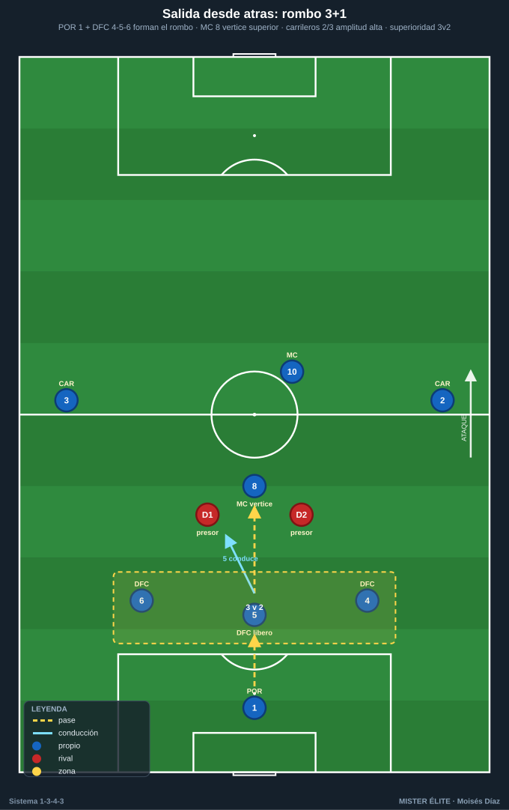
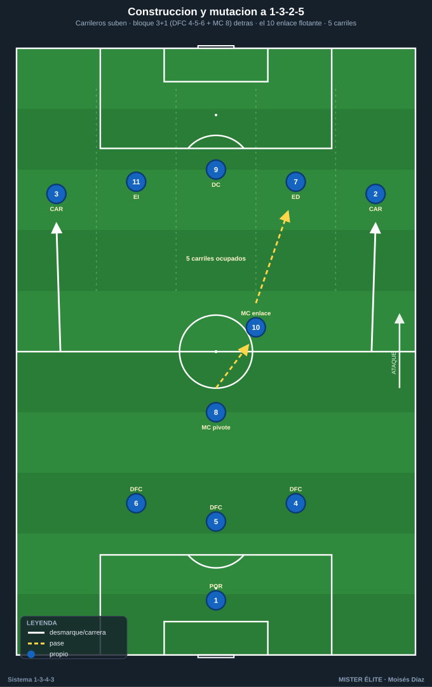
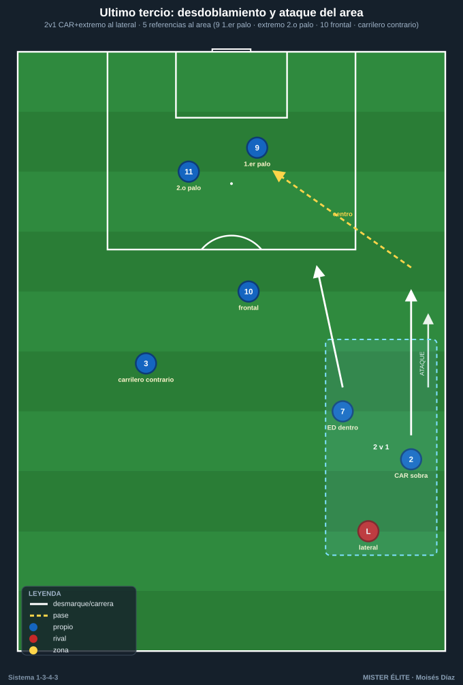

Módulo 03 · Fase ofensiva del 1-3-4-3
Convención: POR 1 · DFC 4-5-6 (5 = líbero) · CAR 2/3 · MC 8 (pivote) y 10 (ofensivo) · ED 7 · DC 9 · EI 11. Idea madre con balón: el 1-3-4-3 muta a 1-3-2-5. Carrileros y extremos suben y ocupan los 5 carriles → 5 puntas de ataque, máxima amplitud y profundidad.
El ataque del 1-3-4-3 tiene tres tramos: salir limpio desde atrás con superioridad, construir y mutar a 1-3-2-5 en zona media, y finalizar poblando el área con criterio. Todo lo sostiene un principio: amplitud no negociable de los carrileros.
1. Salida desde atrás (superioridad de primera línea)

Estructura base: el rombo de primera línea lo forman POR 1 + DFC 4-5-6 (4 jugadores), y el MC 8 se ofrece como vértice superior por delante de los centrales. Esto genera superioridad ante 1 o 2 puntas rivales:
- Vs 1 punta: 3 centrales contra 1 → +2. El líbero 5 conduce hacia el medio para fijar y romper la primera línea (al fijar a un mediocentro rival libera al 8 o al 10).
- Vs 2 puntas: 3 contra 2 → +1. Salida limpia abriendo a los laterales 4 y 6; el 8 pivota lateralmente o baja entre los centrales (salida en línea de 4 momentánea).
Mecánica clave: 1. 5 (líbero) conduce balón al pie para atraer presión y decidir. 2. 4 y 6 se abren para dar líneas laterales y altura de primer pase. 3. Carrileros 2/3 dan la primera amplitud: suben para fijar al extremo/lateral rival y abrir el campo. 4. 8 da el apoyo central; si lo presionan, baja como tercera salida o pivota a la espalda del punta. 5. 10 se ofrece entre líneas como salida directa que salta la primera presión.
Reglas de salida (coaching): orientar el cuerpo al frente, primer pase al pie del libre, no forzar el pase vertical sin tercer hombre; si no hay salida limpia → pase largo a 9/extremos y disputar la segunda jugada con el bloque ya alto.
2. Construcción en zona media y la mutación a 1-3-2-5

Relación del doble pivote 8/10: - 8 (ancla) sostiene la posición delante de los 3 centrales → equilibrio y primer seguro de transición. - 10 (creador) se mueve libre, recibe entre líneas orientado a portería para conducir, filtrar o asociar. - Nunca los dos en la misma altura: uno baja, otro sube (escalonados) → dos alturas de pase y cobertura del que progresa.
La mutación 1-3-4-3 → 1-3-2-5 (núcleo del sistema): - Carrileros 2/3 suben muy altos al último tercio → dejan a los 3 centrales + 8 atrás. - Con 2/3 arriba + tridente 7-9-11, hay 5 jugadores ocupando los 5 carriles:
| Carril | Jugador |
|---|---|
| Banda izq. | CAR 3 |
| Interior izq. | EI 11 |
| Centro | DC 9 |
| Interior der. | ED 7 |
| Banda der. | CAR 2 |
- Detrás queda el bloque de construcción 3+1 (4-5-6 + 8), con 10 de enlace flotante.
- Efecto: máxima amplitud (banda a banda) + profundidad → estiramos al rival en horizontal y vertical, abrimos pasillos para la recepción del 10 y los extremos.
Patrón de progresión: balón por la línea de 3 → buscar al 10/8 libre o al carrilero en banda → si el carrilero recibe con espacio, el extremo de su lado pisa por dentro para fijar al lateral y dar opción de pared/tercer hombre.
3. Último tercio (creación y finalización)

Amplitud y desdoblamiento: - La amplitud la dan extremo + carrilero del mismo lado combinados (no los dos pegados a la cal). - Desdoblamiento CAR–ED / CAR–EI: uno ataca el exterior (sobra para centrar), el otro entra por dentro al pasillo interior → 2v1 sistemático sobre el lateral rival.
Movimientos del DC 9 (doble desmarque): - Desmarque de apoyo (viene al pie, abre el espacio a su espalda) + desmarque de ruptura (ataca la espalda de la última línea). Encadena apoyo → ruptura.
Ocupación del área (regla de 5 referencias ante un centro): - 1er palo: 9 (ataque corto/desvío). - Centro/penalti: extremo del lado contrario pisando dentro. - 2º palo: carrilero del lado contrario y/o EI/ED contrario (llegada larga). - Rechace/borde del área: 10 llega desde atrás + 8 equilibra por si rechace y transición.
4. Automatismos ofensivos
- Pared (1-2): central/8 con el 10 o el extremo que pisa dentro para superar la presión.
- Tercer hombre: 5 (líbero) → 8 (apoyo) → 10/extremo que ataca el espacio. El receptor final no es a quien presionan.
- Desdoblamiento carrilero-extremo: uno por fuera, otro por dentro (2v1 al lateral). Alternar quién profundiza.
- Llegada desde atrás: el 10 ataca el área como segundo punta tardío; el carrilero del lado débil llega al 2º palo; el 8 se suma al borde para el rechace.
- Sobra y centro: carrilero por fuera, extremo arrastra al lateral hacia dentro → carrilero recibe en carrera y centra raso/tenso.
- Cambio de orientación: circular por la línea de 3 hasta el carrilero del lado contrario aislado (la amplitud de los 5 de arriba garantiza siempre un hombre libre lejos del balón).
Ideas clave
- La salida nace de la superioridad de la primera línea (rombo POR + 3 DFC, con el 8 de vértice).
- El líbero 5 manda la salida: conduce, fija y decide.
- La mutación a 1-3-2-5 ocupa los 5 carriles → siempre hay hombre libre y opciones de cambio de orientación.
- Amplitud no negociable: sin la altura de los carrileros no existe la mutación.
- Escalonar el doble pivote: uno asegura, otro crea/llega.
- El 9 con doble desmarque (apoyo para abrir, ruptura para finalizar) y el área poblada con 5 referencias.
Errores comunes
- Forzar el pase vertical sin tercer hombre: pérdida con el bloque subido.
- El líbero 5 no progresa con criterio: la salida se atasca.
- Carrileros y extremos en la misma altura/carril: se anula el 2v1 al lateral.
- Doble pivote en la misma línea: sin cobertura del que progresa.
- Atacar sin ocupar los 5 carriles: desaparece el hombre libre y el cambio de orientación.
- Centrar con el área vacía o con todos esperando parados: hay que atacar el balón en movimiento, con 5 referencias y zonas repartidas.